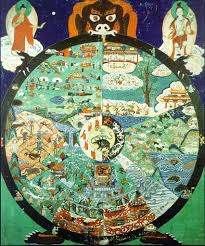

Бхавачакра в буддийской философии означает «Колесо бытия» или «Колесо взаимозависимого происхождения», также здесь уместен термин «Колесо Сансары». В иконографии Бхавачакра изображается в виде колеса из шести спиц, которое крепко держит клыками и лапами бог смерти Яма Дхармараджа в виде черепахи. В самом центре круга обычно изображают трех животных символизирующие три яда ума; свинью, змею и петуха, хватающих друг друга и являющихся символами невежества, гнева и похоти, все это и есть корень страдания и, следовательно, перерождений.
В круге вокруг трех животных изображают добродетельных людей, чей путь устремлён на небеса, и фигуры недобродетельных людей, которых, связанными, демоны тащат в нижние миры. В частях колеса разделенных спицами изображены шесть миров, три верхних и три нижних. Сверху изображены миры богов, асуров и людей, а в нижних, миры животных, голодных духов и ады. Виды перерождения и их порядок передан двенадцатью изображениями на ободе колеса, которые символизируют двенадцать звеньев цепи взаимозависимого происхождения как основной формулы данного учения, описывающей цикл перерождений, состоящий из трех жизней особи в сансаре.
Наверху справа изображён Будда Шакьямуни, а слева изображён небесный мир Будды Амитабхи, Сукхавати или как ее часто называют «Читая земля». На некоторых тханках наверху слева иногда изображают Бодхисаттву Авалокитешвару.